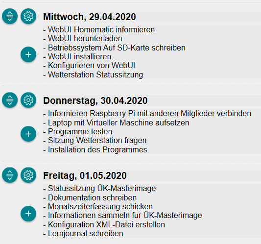
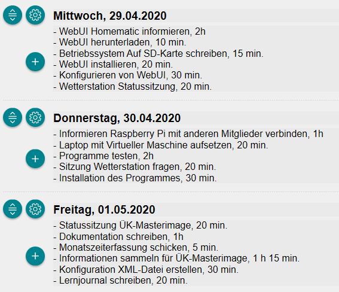
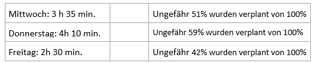
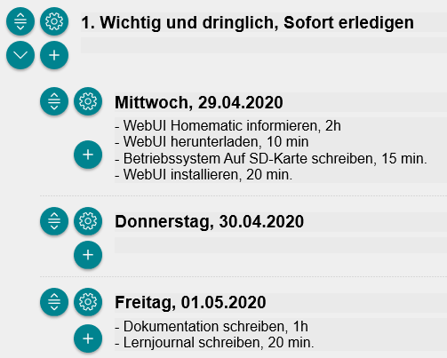
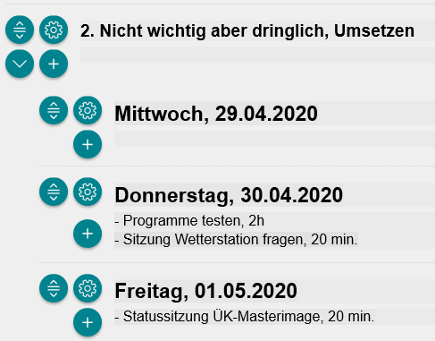
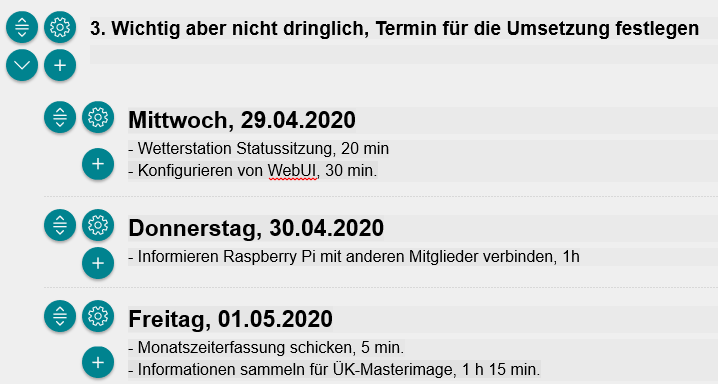
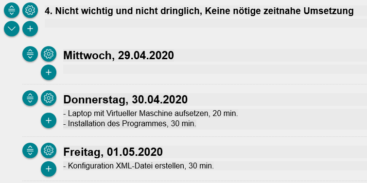

Mein Tagesplan erstellt mit ALPEN-Methode
A – Aufgaben, Termine, Aktivitäten notieren

L – Länge schätzen

P – Pufferzeiten einplanen
Ich habe genug Pufferzeit eingebaut, so dass ich diese Woche überhaupt nicht gestresst werden kann, da ich diese Woche auch nicht so viel zu tun habe. Die verplante Zeit überschreitet nicht die 60%. Pro Tag arbeite ich sieben Stunden ohne Pause, am Freitag arbeite ich nur sechs Stunden, da wir eine Stunde früher mit der Arbeit aufhören.

E – Entscheidungen treffen
   
N- Nachkontrolle
Wie verlief die Planung?
Mittwoch, 29.04.2020
Für das Informieren von WebUI hatte ich genug Zeit eingeplant, so dass ich schneller fertig war als gedacht. Da meine Internet Verbindung nicht so gut stand, hat dies etwas länger gedauert, hatte aber trotzdem genug Zeit eingespart. Es hat insgesamt ungefähr 5 Minuten gedauert. Auch beim Schreiben auf die SD-Karte verlief es schneller als eingeplant. Als ich die SD-Karte in den Raspberry Pi hineinsteckte, kam es zu einem Missgeschick meinerseits, aber zum Glück hatte ich noch genug Zeit, so dass ich nicht in Rückstand geriet. Während WebUI installiert wurde, konnte ich sogar noch an der Dokumentation arbeiten, was ich eigentlich nicht eingeplant hatte. Nach der Installation konnte ich WebUI konfigurieren, was viel schneller ging als vorgesehen. Am Morgen hatte ich noch eine Statussitzung vom Projekt Wetterstation bei dem wir etwas länger brauchten, aber im Grossen und Ganzen hatte ich noch genug Zeit und wurde mit allem fertig, was ich eingeplant hatte.
Donnerstag, 30.04.2020
Damit andere Personen in meiner Gruppe auf den Raspberry Pi zugreifen konnten, musste ich mir überlegen, wie dies am besten funktionieren könnte. Ich testete ein paar Programme, was dann doch über 2 Stunden meiner Zeit beanspruchte. Dies wegen der Installation und dann überhaupt mit dem Programm umgehen zu können. Nach ungefähr 2h und 30 Minuten habe ich mich für TeamViewer entschieden und habe Zeit gewonnen, da ich das Programm bereits kannte. Die Programme habe ich auf einer virtuellen Maschine installiert, da ich den Laptop vom Basislehrjahr hatte und keinen direkten Zugriff darauf habe. Da ich schon auf fertige virtuelle Maschinen zugreifen konnte, war es schnell installiert und ich hatte keine Probleme. Am Morgen gab es kurz eine Sitzung zu der Wetterstation, welche nur 15 Minuten dauerte. Auch heute hatte ich keine Probleme mit der Zeit. Ich denke, ich sollte für den nächsten Tag mehr einplanen, da viel zu viel freie Zeit am Schluss übrigbleibt.
Freitag, 01.05.2020
Am Morgen startete ich mit einer kurzen Statussitzung, die keine 20 Minuten dauerte. Für die Wetterstation sollte ich die Dokumentation schreiben, aber benötigte dafür dann doch 2 Stunden, da ich viel mehr erarbeitete als ich dachte und die Links von den Quellen suchen musste, um ins Dokument einfügen zu können. Die Monatszeit-Erfassung habe ich zuletzt erledigt, da ich vergessen hatte, diese abzuschicken. Zum Thema Masterimage, habe ich so viel gefunden, dass ich die Zeit vergessen habe und dadurch etwas in Rückstand geriet. Ausserdem konnte ich die XML-Datei installieren, aber es gab einen Fehler, für den ich nicht mehr die Zeit fand, um ihn zu korrigieren. Das Lernjournal verlief ohne Probleme, aber ich sollte 10 Minuten mehr Zeit für dies einplanen.
Reflektion
Ich finde die Alpen Methode ist eine gute Idee zum Planen von Tagesabläufen. Das Problem ist, da ich im Moment mit der Projekt Arbeit beschäftigt bin, kann es immer sein, dass es zu Problemen kommt und dies dann auch mehr Zeit beansprucht, da nicht direkt eine Lösung gefunden wird. Meiner Meinung nach hilft es am meisten, sich zu notieren, was alles noch erledigt werden muss, so dass am Schluss nichts vergessen geht.
Im Moment verwende ich keine Tagesorganisation, aber ich finde es gut, wenn vor Arbeitsbeginn aufgeschrieben wird, was alles an dem Tag erreicht werden sollte. Die Zuteilung von wichtig bis zu nicht dringlich, kann hilfreich sein, wenn wirklich viel zu erledigen ist, aber ich fand, dass dies bei mir nicht nötig war.